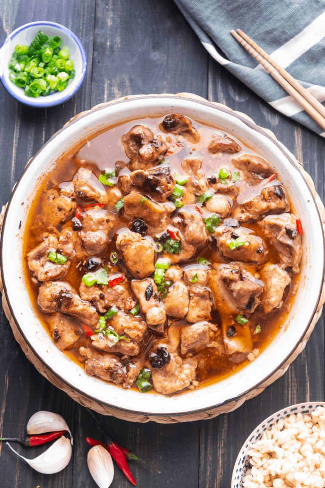

Chinese Steamed Spare Ribs
What are Steamed Spare Ribs?

Dim Sum is a staple of Southeastern Chinese food specifically Guangdong.
As a son of an immigrant from Guangzhou I have many memories of going to
Flushing to have dim sum with extended family on many weekends. The steamed
spare ribs is one of the quintessential items that I always had and looked forward to.
The thing is with these ribs is that it is so easy to make. All it takes is marinating
the ribs and putting it into a steamer and you'll have delicious ribs in no time.
Ingredients
- 1 lb pork spare ribs
- 1 tsp seasame oil
- 1/2 tsp salt (to taste)
- 1/2 tbsp sugar (to taste)
- 4 cloves of garlic minced
- 2 tbsp Shaoxing wine
- 1 tbsp minced ginger (about a thumb of ginger)
- 10-15 Douchi (fermented black bean) smashed
- 1-1/2 tsp of cornstarch or potatostarch
- 1 tbsp soy sauce
Instructions
-
Cut the pork into bite-sized pieces. The key is to cut in the space between the bones.
you will have some larger and some smaller pieces depending on the ribs you got.
Note: You can get the right ribs from a Chinese supermarket or you can ask your butcher to cut
a rack lengthwise. The bones should be around 1" wide.
-
Mix the meat with all the other ingredients.
- Marinate for 20 minutes minimum up to 2 hours
- Put the meat into a place and steam for 15 minutes up to an hour.
- Serve with rice or have it as is! Enjoy!